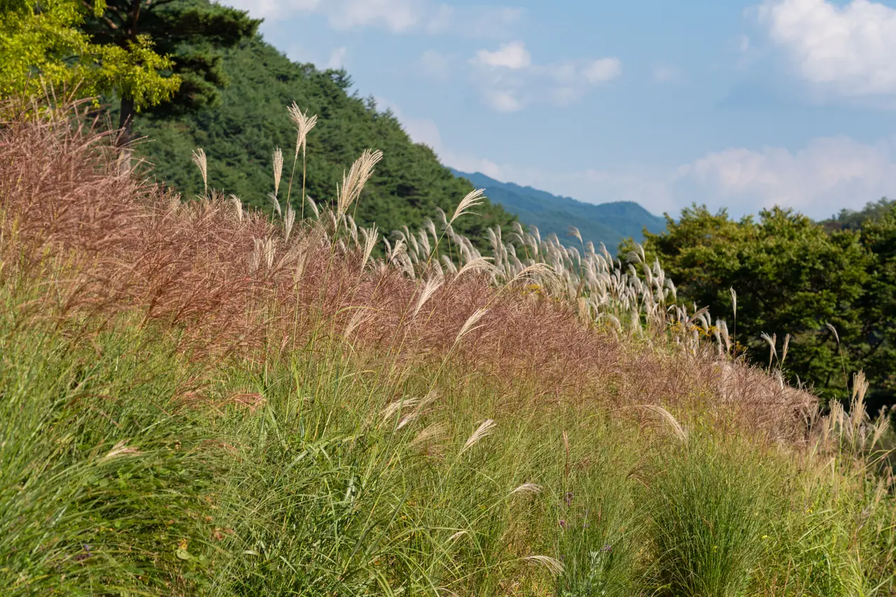
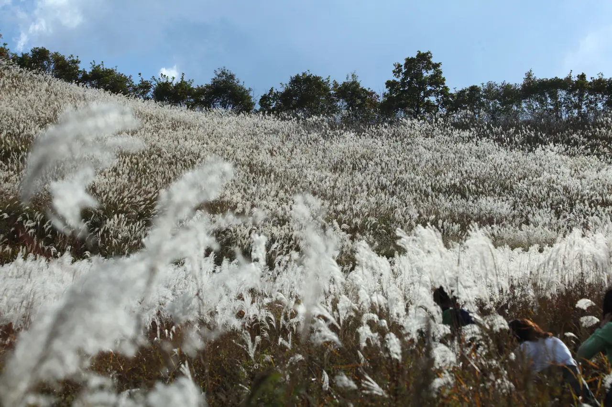
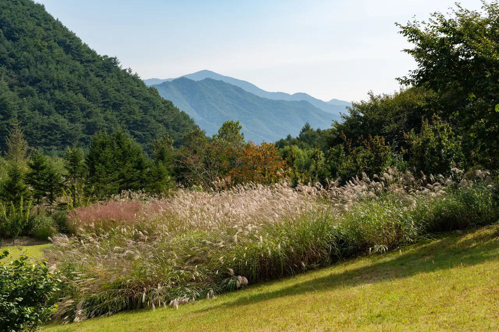
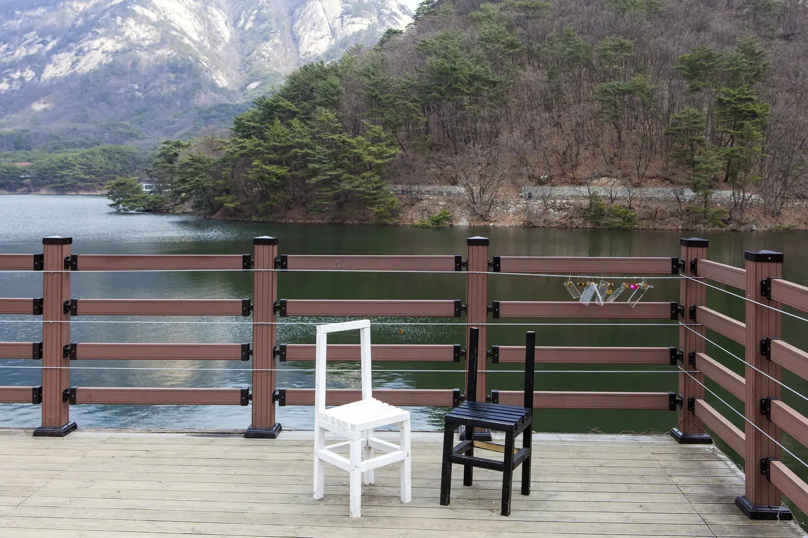
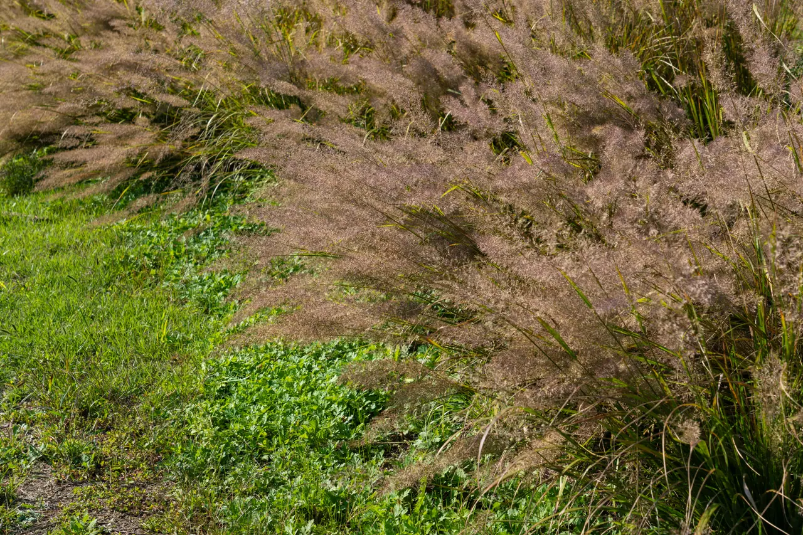

▲ 포천 명성산 억새 능선. 억새는 10월 중순부터 은빛으로 바뀐다 ⓒ 경기도 (공공누리 제1유형)
가을 여행 계획은 대개 단풍 일정에 맞춰 짭니다.
억새를 보러 간다면 그 달력은 맞지 않습니다. 억새는 단풍보다 늦게 절정에 듭니다.
1. 억새와 갈대는 다른 식물입니다
둘을 자주 섞어 씁니다. 하지만 자라는 곳이 다릅니다.
| 구분 | 억새 | 갈대 |
|---|---|---|
| 자라는 곳 | 산 능선·비탈 — 마른 땅에서도 자란다 | 강가·습지 — 마르면 살지 못한다 |
| 키 | 1~2m | 3m까지 — 더 크다 |
| 꽃 색 | 은빛·흰빛 | 고동색·갈색 |
| 잎 | 좁고, 가운데 흰 잎맥이 뚜렷하다 | 넓지만 잎맥이 가늘어 잘 안 보인다 |
| 잎 가장자리 | 날카로운 톱니 — 손이 베인다 | 톱니가 두드러지지 않는다 |
| 자라는 방식 | 짧고 굵은 땅속줄기 — 뭉쳐난다 | 긴 땅속줄기 — 퍼져 나간다 |
| 대표 명소 | 민둥산 · 명성산 · 신불산 | 순천만 · 우포늪 |
📍 그래서 가는 방법이 다릅니다
갈대는 평지 습지에 있어 주차장에서 데크를 따라 걸으면 됩니다.
억새는 산 능선에 있습니다. 차로 갈 수 있는 곳은 대개 들머리 주차장까지이고, 그다음은 걸어 올라가야 합니다. 드라이브만으로 끝나지 않는다는 뜻입니다.

▲ 순천만 갈대밭. 억새와 달리 갈대는 물가에서 넓게 퍼져 자란다 ⓒ 국가유산청 (공공누리 제1유형)

▲ 순천만은 갯벌을 따라 갈대가 이어진다. 평지라 차에서 내려 바로 걷는다 ⓒ 국가유산청 (공공누리 제1유형)
✅ 현장에서 3초 만에 구별하는 법
· 발밑이 젖어 있나 — 물가면 갈대, 마른 비탈이면 억새
· 이삭이 은빛인가 갈색인가 — 은빛이면 억새
· 잎 가운데 흰 줄이 보이면 억새
· 뭉쳐서 포기를 이루면 억새, 흩어져 넓게 퍼져 있으면 갈대
잎을 만질 때는 조심해야 합니다. 억새 잎 가장자리에는 날카로운 톱니가 있어 손이 쉽게 베입니다. 아이와 함께라면 미리 일러두는 편이 좋습니다.
2. 언제가 절정인가
억새는 초가을에 이삭이 패기 시작합니다. 그리고 10월 중순이면 평원을 하얗게 덮습니다.
| 시기 | 상태 |
|---|---|
| 9월 | 이삭이 패기 시작 — 아직 초록이 섞여 있다 |
| 10월 중순 | 은빛 절정 — 빛을 받으면 반짝인다 |
| 10월 하순 | 은빛에서 백색으로 넘어가는 구간 |
| 11월 초 | 차분한 백색 — 밀도는 높지만 반짝임은 줄어든다 |
📍 어느 쪽을 원하는지 먼저 정하세요
은빛의 반짝임을 보고 싶다면 10월 중순입니다. 역광에서 가장 극적입니다.
차분한 백색과 두터운 밀도를 원한다면 11월 초가 적기입니다. 사람도 줄어듭니다.

▲ 10월 중순의 억새. 역광에서 은빛이 가장 잘 드러난다 ⓒ 한국수목원정원관리원 (공공누리 제1유형)
3. 5대 억새군락지
국내에서 억새 군락으로 이름난 곳은 다섯 군데로 꼽힙니다.
| 지역 | 장소 | 특징 |
|---|---|---|
| 강원 정선 | 민둥산 | 정상부 20만 평 능선 — 규모가 가장 크다 |
| 울산 | 신불산 | 영남알프스 능선 — 고도가 높다 |
| 경기 포천 | 명성산 | 수도권에서 가장 가깝다 |
| 충남 보령 | 오서산 | 서해가 함께 보인다 |
| 전남 장흥 | 천관산 | 남해안 조망 |
여기에 도심에서 가장 접근이 쉬운 서울 상암 하늘공원이 더해집니다. 매년 10월에 서울억새축제가 열립니다.

▲ 포천 명성산. 수도권에서 가장 가까운 5대 억새군락지다 ⓒ 경기도 (공공누리 제1유형)

▲ 억새는 물이 잘 빠지는 비탈에서 군락을 이룬다 ⓒ 한국수목원정원관리원 (공공누리 제1유형)

▲ 억새 군락은 대개 비탈과 능선에 있다. 주차장에서 걸어 올라가야 하는 이유다 ⓒ 한국수목원정원관리원 (공공누리 제1유형)
4. 차로 가는 억새 — 접근성이 갈립니다
억새 명소는 대부분 산에 있습니다. 그래서 '차로 가는 억새'는 곧 어디까지 차로 가고 어디부터 걷느냐의 문제가 됩니다.
✅ 출발 전 확인할 것
· 들머리 주차장 위치와 규모 — 축제 기간에는 오전 중 마감되는 곳이 많다
· 주차장에서 억새 군락까지 걷는 시간 — 30분부터 두 시간까지 편차가 크다
· 임도·셔틀 운영 여부 — 축제 기간에만 운행하는 곳이 있다
· 진입로가 편도 1차로인지 — 산간 진입로는 한 번 막히면 되돌리기 어렵다
📍 주차 조건은 따로 정리했습니다
억새 명소는 국립공원·군립공원 성격의 산지가 많아 주차 난도가 높은 편에 속합니다.
유형별 주차 난도와 미리 가늠하는 방법은 주차가 편한 관광지, 최악인 관광지 바로가기에서 다뤘습니다.

▲ 억새 명소 진입로는 대개 이런 산간 도로다. 축제 기간에는 병목이 된다 ⓒ 한국관광공사 (공공누리 제1유형)
📍 억새만 보고 오기는 아깝습니다
명성산 들머리에는 산정호수가 붙어 있습니다. 호수 둘레길은 평지라 차에서 내려 바로 걸을 수 있습니다.
억새 능선까지 오르기 부담스러운 동행이 있다면, 한 팀은 능선으로 한 팀은 호수로 나누는 방법도 있습니다. 주차장을 공유하기 때문입니다.

▲ 산정호수 둘레길. 억새 능선과 달리 평지에서 걷는다 ⓒ 경기도 (공공누리 제1유형)
5. 보는 시간대가 다릅니다
억새는 빛을 등지고 볼 때 가장 잘 보입니다. 이삭이 빛을 투과시켜 반짝이기 때문입니다.
✅ 관람·촬영 요령
· 역광에서 은빛이 가장 강하다 — 해를 마주 보는 방향
· 이른 아침과 해 지기 전 한 시간이 가장 좋다
· 바람이 적당히 부는 날이 낫다 — 물결이 생긴다
· 한낮 정오는 가장 밋밋하게 보인다

▲ 억새는 빛을 등지고 볼 때 이삭이 가장 잘 드러난다 ⓒ 한국수목원정원관리원 (공공누리 제1유형)
6. 확인하고 출발하세요
이 글의 시기는 통상적인 패턴입니다. 억새 절정도 단풍처럼 그해 기온에 따라 달라집니다.
2026년 각 지역 축제 일정은 아직 확정 공지되지 않았습니다. 민둥산 억새축제는 보통 9월 하순 개막해 11월 초순까지 이어지지만, 실제 일정과 셔틀·주차 운영은 정선군 등 지자체 공지로 반드시 재확인해야 합니다.
정리
억새는 단풍보다 늦습니다. 10월 중순에 은빛으로 절정에 들고, 11월 초에는 차분한 백색으로 바뀝니다. 어느 쪽을 원하는지에 따라 날짜가 달라집니다.
5대 억새군락지는 정선 민둥산, 울산 신불산, 포천 명성산, 보령 오서산, 장흥 천관산입니다. 서울에서는 상암 하늘공원 억새축제가 10월에 열립니다.
억새는 산 능선에 있어 차로는 들머리 주차장까지입니다. 주차장 규모와 걷는 시간, 셔틀 운영 여부를 먼저 확인해야 합니다. 2026년 축제 일정은 지자체 공지로 재확인하세요.